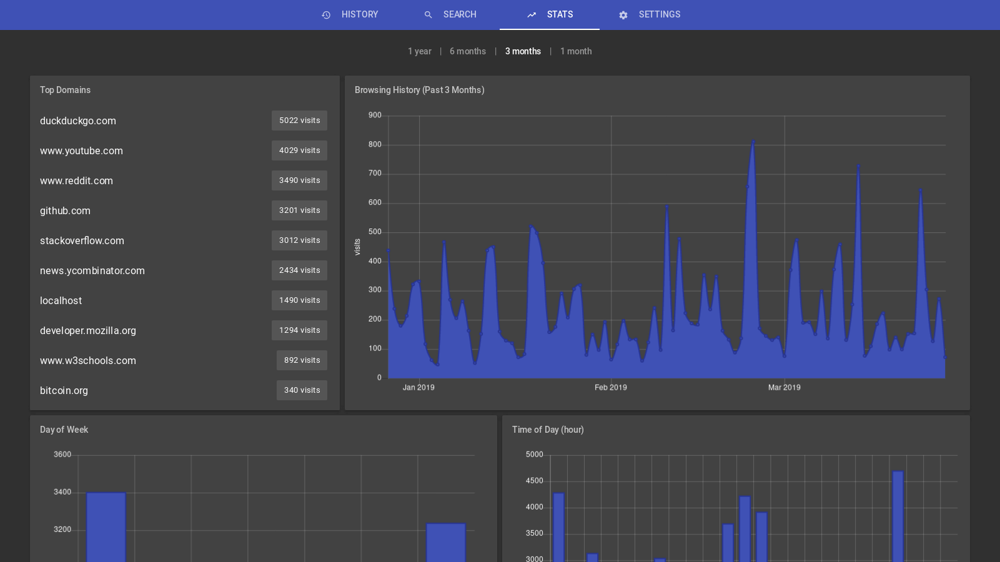
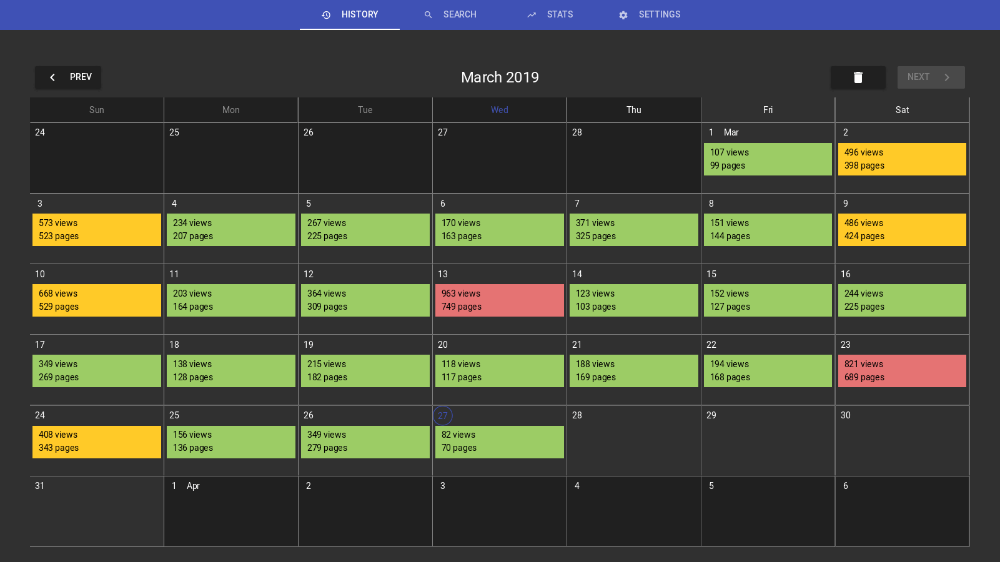

Extend Firefox's history capabilities with browsing stats, improved searching and several essential features
install view sourceView browsing history stats over several time ranges: 1 year and 1/3/6 month(s)
Visualize browser history by month and clear history by date range
chrono extends Firefox's search capabilities with a couple of operators to filter by date range and remove search results
Remove results with the minus (-) operator
Limit results within a date range. Examples:
Since 01/01/2019: 2019..
Since Mar 1, 2018 to Mar 31, 2019: 201803..201903
Until Dec 31, 2018: ..2018
Range: 20170329..20180329